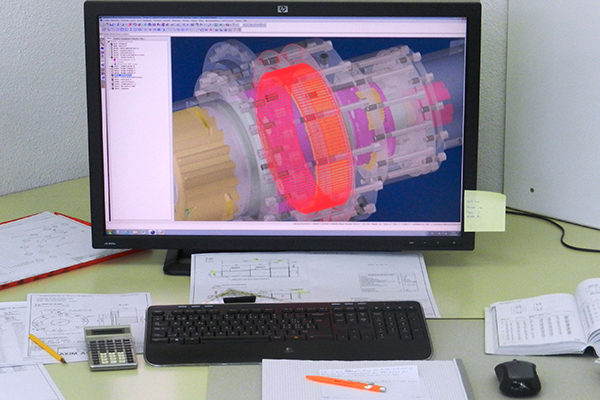
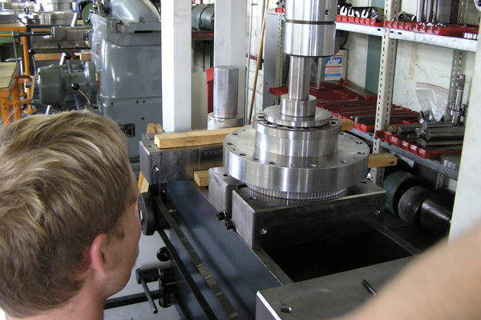
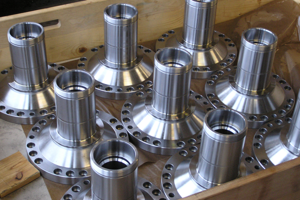
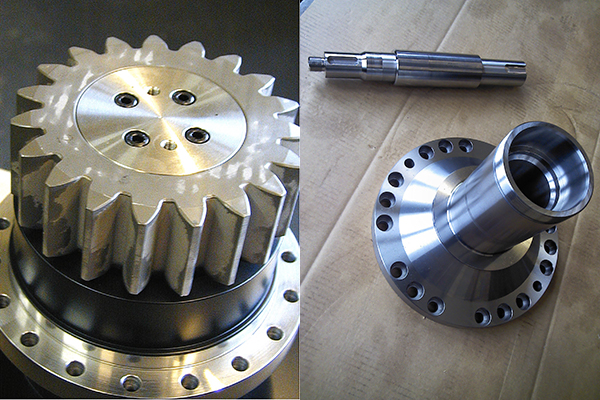
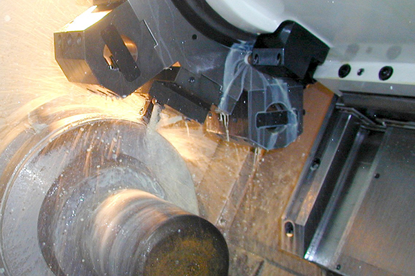

Good engineering starts with an open conversation - and / or a very precise briefing. This simplifies and accelerates our work.
We analyze the requirements and we carefully weigh up, what makes the most sense for the customer: A standard gearbox, a customized standard gearbox, a new concept?
We develop an optimal proposal or several variants to choose from (in terms of quality, engineering, price, schedule, conditions, etc.). Once the order is granted, the gearboxes are produced immediately.
Thanks to the competence of our staff and the quality of our machinery, we can meet all customer requirements quickly and accurately.

The better you handle a gearbox, the longer it performs. That’s why we offer cleaning, maintenance, lubrication and replacement of parts with all of the gearboxes we sell. We guarantee all of our work. If a gearbox is not working as it should, no matter how old it is, we’ll find a solution as soon as possible...

We stock a wide range of spare parts for assembling our standard gearboxes as well as specialized, individual components for our customers. This increases our capacity to deliver quickly and efficiently.

We don’t just build gearboxes, we also create them. For almost 90 years we’ve been developing and producing parts according to customer’s drawings, prototypes, custom-made and small to large series. For further information on how we can craft something exclusive for you, please contact our production manager
Christoph Stocker, Production Manager
+41 55 451 85 03
E-mail

5-Axis Turning- / Millingcenter with opposite Spindle
Clamping-Ø max. 250 mm, Turn-Ø max. 300 mm
CNC-Turning center
Clamping-Ø max. 340 mm, Turn-Ø max. 350 mm, Tailstock
CNC-Turning center
Clamping-Ø max. 500 mm, Turn-Ø max. 550 mm, Tailstock
3-Axis CNC-Millingcenter
650 x 600 x 500 mm
3-Axis CNC-Millingcenter
400 x 760 x 500 mm
Gear Shaping
Outside max. Ø 180 mm, Lift 50 mm, Internal max. Ø 200 mm, Lift 30 mm
Gear Shaping
Outside max. Ø 400 mm, Lift 80 mm, Internal max. Ø 400 mm, Lift 70 mm
Gear Shaping
Outside max. Ø 450 mm, Lift 90 mm, Internal max. Ø 400 mm, Lift 75 mm
Flatgrinding
350 mm x 750 mm
Circular Grinding , Internal / Outside
Outside Ø max. 240 mm x 450 mm
• Electrolytic
• Dot peen marking
Autocad and Topsolid CAM (3D)
• Assembly and painting of components
• Crane 1 to, rollaway-bed-press 100 to – by appointment
We also have the ability to pre-process the manufacturing of your work pieces if their dimension exceed slightly or partially, the range of our machines. We can clarify the various possibilities with a scale drawing.
All of the above-listed processes are performed “In House”. Additional requirements such as thermal treatments or complex grinding processes are performed by our long-standing and trusted partners.